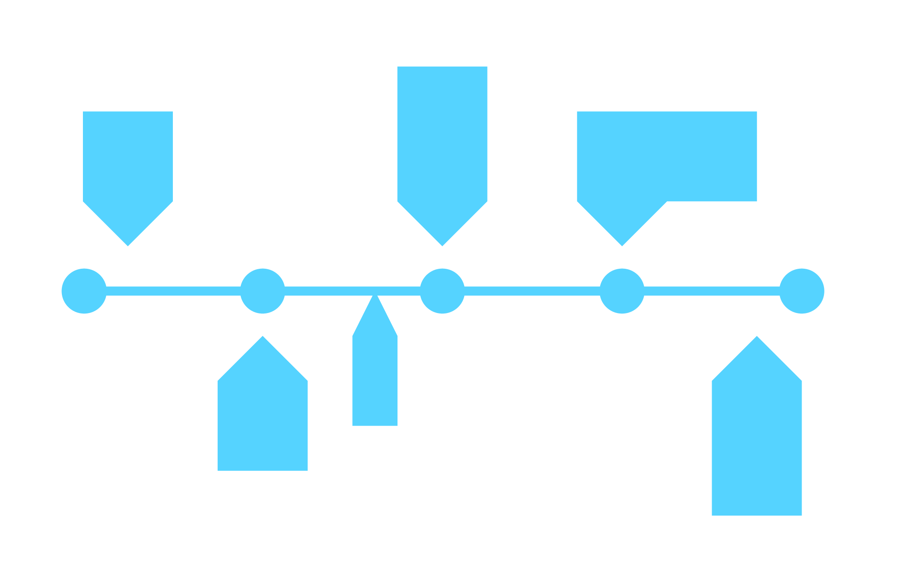

Phase 4: Design sprint

- Rule number one in art and design - if it's not documented, it never happened. Please keep detailed and dated notes, photos, screenshots, video recordings, and other forms of documentation of team meetings, brainstorm sessions, concept research, design sprints or working session outcomes, etc. This will help your team immensely when crafting the project document, and will mostly likely be referred back to quite often. Consider keeping these materials in a shared team folder. See collaboration tools for information on available resources.
- Consider setting roles and responsibilities. Members may have multiple roles.
- If your team feels that the design process isn't working as intended, feel free to change up the design of the sprint. However, don't give up too early, sometimes you have to trust the process to give it a chance to work.
Sprint Updates (Group Blog Posts)
In addition to your individual Weekly Reports, each group must post a blog post to a public blog.
Each Sprint Update must be at least 500 words long and include images or video media.
Resources
Submission details:
- Publish 5 or more detailed posts to the http://sites.psu.edu blog that you created to track your project's progress from the design sprint. Upload media and write descriptions and other relevant information.
- The end results of the design process are included in what gets published on this blog, they do not need to be uploaded to canvas other than what is included in the project document PDF.